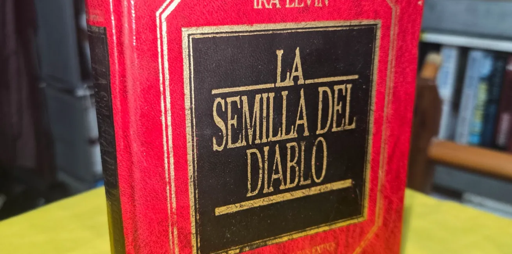

La Semilla del Diablo
¿Te gusta la literatura de terror? Échale un ojo a esta reseña, la segunda aportación de Salvador Flores acerca de una de sus novelas favoritas de terror, un clásico de los sesentas que décadas después, tiene mucho miedo qué ofrecer.

LA SEMILLA DEL DIABLO.
Escrita por: Ira Levin.
Publicado en: 1967.
Edición en Español por: Editorial ORBYS en su sello “Biblioteca grandes éxitos” en 1983.
271 páginas.
¿Puede la espera de un ser querido que está por nacer, una esperanza de luz y amor, ser todo lo contrario?
Continuando con la trinidad de las obras de terror de la década de los setenta, que definieron el terror moderno, toca el turno a “La semilla del Diablo”, también conocida como “El bebé de Rosemary” (su título original), escrita por Ira Levin.
Publicado originalmente en 1967 tuvo tanto éxito que al año siguiente se hizo su adaptación cinematográfica dirigida por Roman Polanski. La película tuvo un impacto aún mayor que la novela en el público de aquella época y en gran medida es por la película que los lectores llegamos posteriormente a la obra escrita.
En las películas que componen la trilogía maldita de ese tiempo (La Profecía, La semilla del diablo y El exorcista), gran parte del impacto fue gracias a la temática y elementos como la secta satánica, la actuación de un elenco que a la luz del tiempo es difícil imaginar con otros actores y el tratamiento de thriller psicológico. La cinta tuvo también su carga de rechazo y censura, puntualmente en un momento en particular que insinúa sutilmente que la protagonista interpretada por Mia Farrow, es poseída por una entidad sobrenatural. Esa escena abrió el debate de lo que era buen gusto o grotesco y transgresor.
Ya en en los mágicos 90's los primos nos juntamos en familia y veíamos los fines de semana el maratón en televisión abierta, con esas trilogías temáticas que teníamos la oportunidad de disfrutar y que tanto nos maravilló, poder disfrutar las películas como Volver al futuro, Terminator, etc.
Ya en los años 2000, tuve la suerte de comprar la novela en una librería de segunda mano (¡benditas sean las librerías de segunda mano!). La historia trata del joven matrimonio Woodhouse (Rosmary y Guy) que buscan un departamento en Nueva York, mudándose a un edificio en donde encuentran uno a muy buen precio, puesto que, en el mismo, se suicidó una mujer. Aunque se trata de un detalle que les incomoda la oferta es demasiado buena para dejarla pasar. Quienes los reciben al mudarse son los Castavents, personas mayores que en un principio son agradables, pero poco a poco empiezan a incomodar a Mary Woodhouse, por detalles extraños que ella empieza a percibir. Poco después de que su marido (quien es actor) obtiene un papel en Broadway, ella queda embarazada, con lo que los Castavents se interesan más por su salud. Rosemary, está feliz en un principio por el bebé que crece en su vientre, pero, conforme avanza el embarazo, su salud empeora. Llega a sospechar que los Castavents y sus amigos, no son lo que aparentan, empieza a ver y escuchar cosas, a sentirse muy extraña. Una situación que la sumerge en un sentimiento de soledad, claustrofobia y aislamiento.
El estilo de esta novela podría definirse como costumbrista, con detalles bien narrados, pocas emociones, con elementos sobrenaturales definidos y poco utilizados, pero, con una construcción del estado del personaje principal (Rosemary) yendo de la emoción maternal al terror por sentirse acorralada, por sentir la presencia de algo sobrenatural, y finalmente por el impacto de descubrir lo que en verdad esta pasando. Todo narrado en primera persona, por lo que, como lectores, vamos adentrándonos en la trama con Rosemary, desde el hecho de ver muebles extraños, personas peculiares, la consolidación de la carrera de su marido, el embarazo, el estrés por el parto, la ansiedad del aislamiento y sentir que se vuelve loca por las cosas que no puede explicar.
El terror psicológico es el componente principal de la novela, bien dibujado en la descomposición de la mente de Rosemary, para mezclarse después con los elementos sobrenaturales y la existencia de una secta.
Al tener un ritmo que enmarca la vida cotidiana de una joven pareja que comienza a construir su vida, el embarazo y un desarrollo enfocado en el deterioro psicológico, puede resultar lenta para el lector moderno, pero, tengo que señalar, que es gracias al ritmo pausado que logramos empatizar con el personaje, que también sintamos el ambiente claustrofóbico y nos aterroricemos junto con ella cuando descubramos la trama y un final desesperanzador. Cuenta con varias ediciones en español por parte de la editorial Grijalbo, Orbis y actualmente por Ediciones B.
¿Por qué leerla en estos tiempos que pareciera que el lector necesita acción constante para no perder el interés?
Los amantes del terror moderno descubrirán que la obra ha envejecido de forma decente, sus personajes están bien escritos y que el tomarse el tiempo para que las cosas pasen, tienen su recompensa. Es una forma distinta del terror, que no depende de los gritos repentinos o los ruidos fuertes para hacernos brincar del asiento. El miedo está no en la cantidad de sangre o escenas grotescas, sino en la mente y, si hacemos caso a la novela, en las almas oscuras que son parte de nuestra realidad, incluso cuando toca temáticas que hoy podemos considerar clichés, como las sectas satánicas, el diablo, los pactos. Aborda el terror desde lo que tendemos a considerar algo bueno sin cuestionar como un embarazo.
Leer a Ira Levin con “La semilla del diablo”, es entrar y disfrutar (para aquellos que aman el terror, lo confieso, me encanta sentirme mal) del terror psicológico que otros autores como Robert Bloch, Ricard Matheson, Ramsey Campbell, por mencionar a algunos, aportaron al género.
El Navegante Literario:

Chava Flores. Amante de la literatura, el dibujo y la pintura, defensor de la palabra y las buenas historias. A veces perdido en el insondable mar de la imaginación, entre tantos referentes se desborda su pasión. Habitante de reinos fantásticos, perturbadores, históricos y poéticos.
Café La Fauna es un lugar para compartir un buen momento tomando café, comiendo o buscando libros en Argonáutica, su sala de lectura. Visítala en Morrow 8, Cuernavaca Centro.